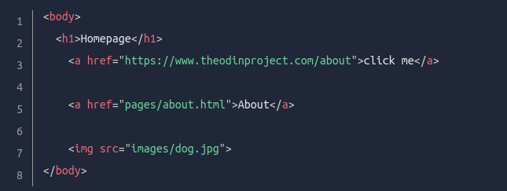

The Links on html are used with the tag a href="internal or external link"> the name of the links button and afterwards close the tag a.
The link needs a path to the destiny page, it could be an URL in the case of an external link whit it's protocol"https".
whereas in the case of using a internal link the path is written from the page of origin to the destiny page including their relationship through the root directory, we use ../ at the start of a internal link as reference to the root directory.

To put an image whitout much personalization we use the tag img( this tag isn't wrapped).
In the same img tag we write src="path/to/image", and we also give the img tag a alt attribute which describes the image in cases where it can't be loaded.
